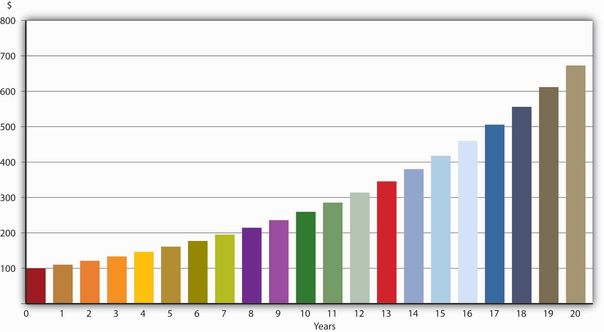

A moment’s reflection should convince you that money today is alwaysCertain interest rates occasionally turn very slightly (−0.004%) negative. The phenomenon is so rare and minor that it need not detain us here.worth more than money tomorrow. If you don’t believe me, send me all of your money immediately. I’ll return every cent of it—scout’s honor—in exactly one year. I won’t hold my breath. You’d be foolish indeed to forgo food, clothes, housing, transportation, and entertainment for a year for no remuneration whatsoever. That’s why a dollar today is worth more than a dollar tomorrow. (Another reason that a dollar today is worth more than a dollar tomorrow is that, in modern economies based on fiat money, prices tend to rise every year. So $100 tomorrow will buy fewer goods and services than $100 today will. We will discuss the impact of inflationA sustained increase in the price level or average prices. on interest rates more at the end of this chapter. For now, we consider only nominal interest ratesThe price of borrowing money as it is usually stated, unadjusted for inflation., not the real interest rateThe price of borrowing money adjusted for inflation..) But what if I told you that if you gave me $100 today, I’d give you $1,000 in a year? Most lenders would jump at that offer (provided they thought I would pay as promised and not default), but I wouldn’t offer it and neither would most borrowers. In fact, about $110 would be the most I’d be willing to give you in a year for $100 today. That’s an interest rate of 10 percent ($10/$100 = .1 or 10%), which, as comedian Adam Sandler might say, is “not too shabby.”www.tsrocks.com/a/adam_sandler_texts/the_chanukah_song.html If we let the loan ride, as they say, capitalizing the interest or, in other words, paying interest on the interest every year, called annually compoundingEarning interest on interest. interest, your $100 investment would grow in value, as shown in Figure 4.1 "The fate of $100 invested at 10%, compounded annually". (The compounding period The amount of time that passes before interest begins to earn interest. need not be a year, and it is even possible to compound interest continuously, but unless otherwise noted we will compound annually in this chapter.)
Figure 4.1 The fate of $100 invested at 10%, compounded annually
The figures in the table are easily calculated by multiplying the previous year’s value by 1.10, 1 representing the principal value and .10 representing the interest rate expressed as a decimal. So $100 today (year = 0) is, at 10 percent interest compounded annually, worth $110 in a year (100 × 1.1), $121 after two years (110 × 1.1), $131.10 after three years (121 × 1.1), and so forth. The quick way to calculate this for any year is to use the following formula:
FV = PV(1 + i)n
where
FV = the future value (the value of your investment in the future)
PV = the present value (the amount of your investment today)
(1 + i)n = the future value factor (aka the present value factor or discount factor in the equation below)
i = interest rate (decimalized, for example, 6% = .06; 25% = .25, 2.763% = .02763, etc.)
n = number of terms (here, years; elsewhere days, months, quarters)
For $100 borrowed today at 10 percent compounded annually, in 100 years I’d owe you $1,378,061 (FV = 100 × 1.1100). (Good luck collecting that one!)
What if someone offers to pay you, say, $1,000 in 5 years? How much would you be willing to pay today for that? Clearly, something less than $1,000. Instead of taking a PV and expanding it via multiplication to determine an FV, here you must do the opposite, or in other words, reduce or “discount” an FV to a PV. You do so by dividing, as in the following formula:
Obviously, we can’t solve this equation unless one of the two remaining variables is given. If the interest rate is given as 5 percent, you would pay $783.53 today for $1,000 payable in 5 years (PV = 1000/1.055). If it is 20 percent, you’d give only $401.88 (PV = 1000/1.25). If it is 1 percent, you would give $951.47 (PV = 1000/1.015). Notice that as the interest rate rises (falls), the present value (price) of the future payment falls (rises). In other words, the price (PV) of some future payment (some FV; generically, a bond) and the rate of interest are inversely related. You can see this algebraically by noting that the i term is in the denominator, so as it gets larger, PV must get smaller (holding FV constant, of course). Economically this makes sense because a higher interest rate means a higher opportunity cost for money, so a sum payable in the future is worth less the more dear money is (the more it costs to borrow it).
If payment of the bond described just above were to be made in ten years instead of five, at 1 percent interest per year, you’d pay $905.29 (PV = 1000/1.0110). Note here that, holding the interest rate (and all other factors) constant, you give less today for a payment further in the future ($905.29 < $951.47). That too makes good sense because you’re without your money longer and need to be compensated for it by paying a lower price for the bond/promise/IOU today.
Congratulations, you just won the Powerball: $100 million payable in $5 million installments over 20 years! Did you really win $100 million? (Hint: Calculate the PV of the final payment with interest at 4 percent.)
No; 5 × 20 = 100, but the money payable next year and in subsequent years is not worth $5 million today if interest rates are above 0, and they almost always are. For example, the last payment, with interest rates at 4 percent compounded annually, has a PV of only 5,000,000/(1.04)20 = $2,281,934.73.
This is a great place to stop and drill until calculating present value and future value becomes second nature to you. Work through the following problems until it hurts. Then do them again, standing on your head or on one leg.
For all questions in this set, interest compounds annually and there are no transaction fees, defaults, etc.